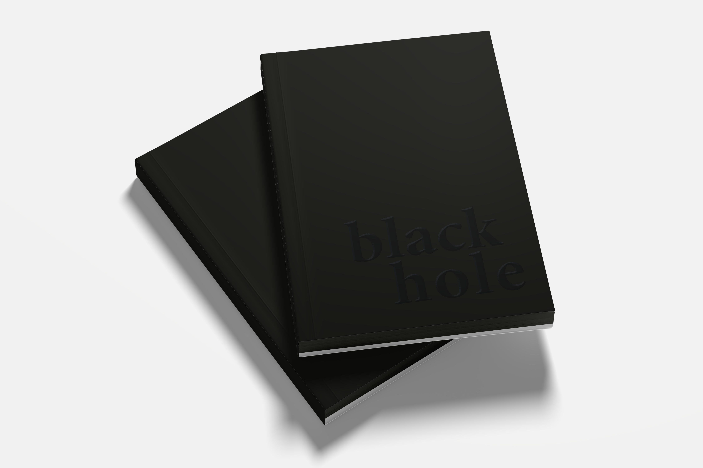
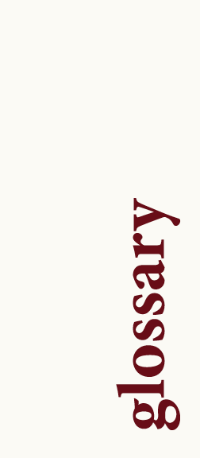
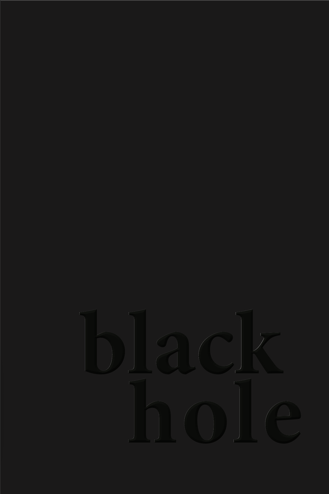
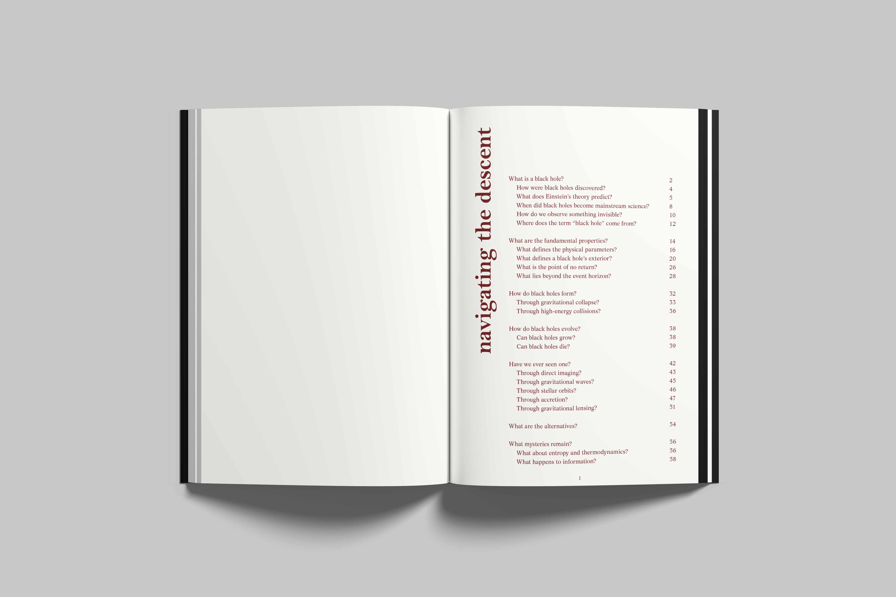
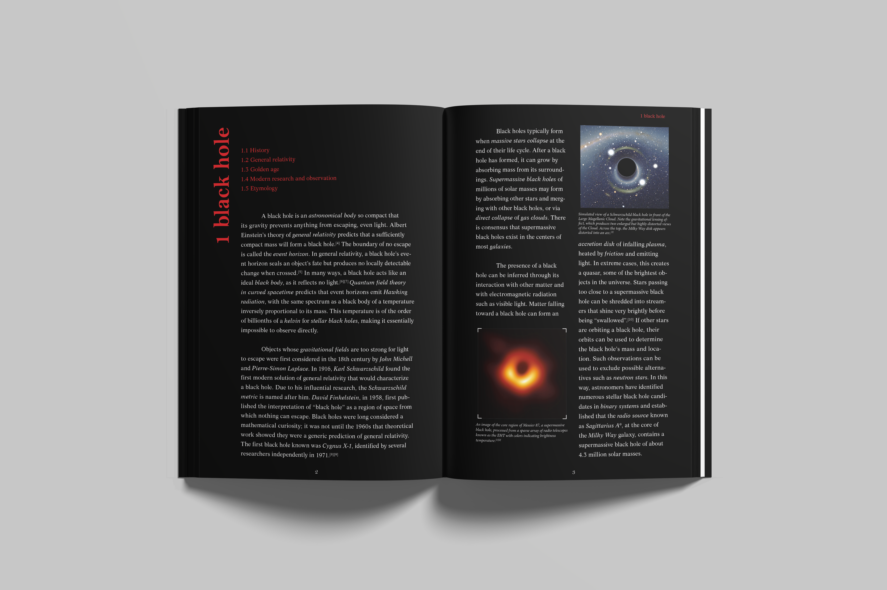
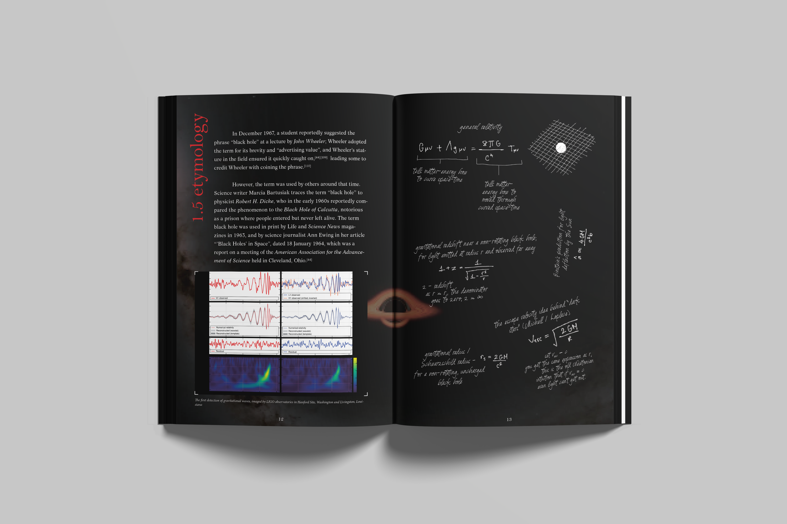
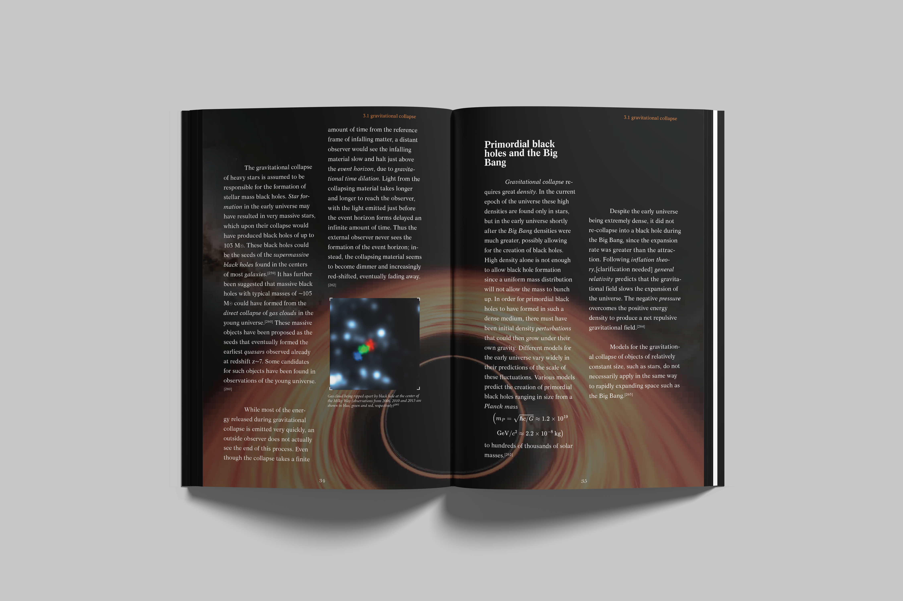
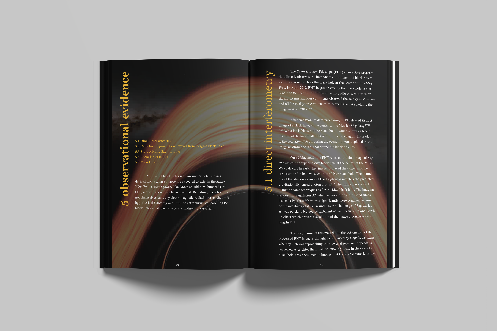
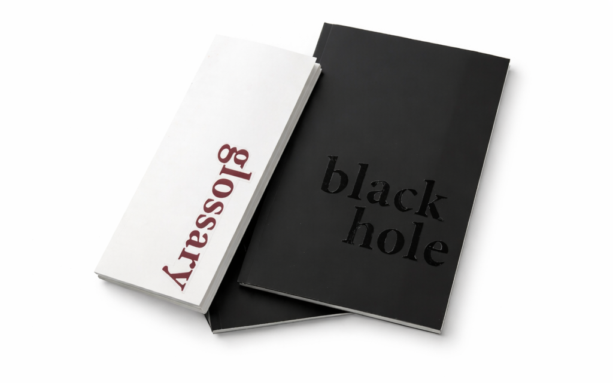
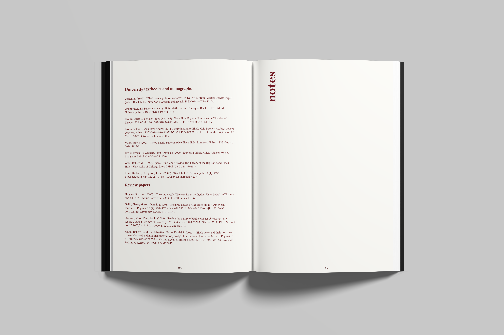

PHYSICS TEXTBOOK

A reimagined physics textbook for secondary school students — where rigorous content is presented through a clear, modular grid system. The design philosophy treats scientific diagrams as primary visual elements, complemented by a precise typographic hierarchy.
Each chapter opener uses large-scale numerals and full-bleed field photography to ground abstract concepts in the tangible world.




Diagram labels use a dedicated condensed typeface, kept distinct from body copy to create a clear visual hierarchy between explanatory prose and technical annotation.



